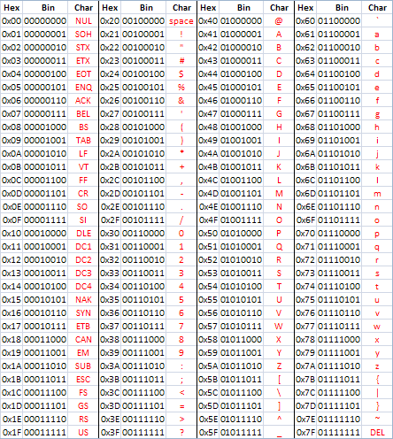

Thème 3 : Les données⚓︎

L'informatique étant le traitement automatique de données, ces données constituent la matière première de toute activité numérique.
Afin de permettre leur réutilisation, il est nécessaire de les conserver de manière persistante.
Les structurer correctement garantit que l’on puisse les exploiter facilement pour produire de l’information.
Expériences de traitement⚓︎
Découvrir la manipulation de données sur la plateforme France-IOI avec les codes :
tiw7phe9pour l'activité n°1 ;6igpd943pour l'activité n°2 ;pcj3ddrhpour l'activité n°3 ;
OU sur la nouvelle mouture de la plateforme : Les données structurées et leur traitement
Solutions
from database import *
table_regions = loadTable("regions")
displayTable(table_regions)
from database import *
table_grandes_villes = loadTable("grandes_villes")
displayTableOnMap(table_grandes_villes,"ville","longitude","latitude")
Notions et vocabulaire à retenir
- Une collection est un ensemble d’objets (concrets ou abstraits) dont on collecte des données, partageant les mêmes descripteurs.
- Un objet est un élément de cette collection.
- Un descripteur désigne une caractéristique de l’objet concerné par la donnée.
- Une valeur est l’information elle-même, c.a.d. la donnée.
- Le type d’une valeur est la nature de cette information. On ne peut comparer des données que si elles sont de même type.
Exemple
Si on s’intéresse aux données gérées par une bibliothèques.
- L’ensemble des usagers de la bibliothèque est une collection ; L’ensemble des livres en est une autre.
- Chacun des livres est un objet de cette collection.
- Le titre comme le numéro ISBN sont des descripteurs de la collection livres.
9782070319527est la valeur du nombre correspondant au numéro ISBN d'un livre dont le titre à pour valeur la chaine de caractères"Les fleurs du mal"(nombre et chaine de caractères sont des types de données).
- Si une donnée concerne une personne, on dit que c’est une donnée personnelle. Le règlement général sur la protection des données, R.G.P.D., encadre le traitement des données personnelles sur le territoire de l'Union européenne.
- Une métadonnées est une donnée qui renseigne sur une donnée. Un fichier numérique est accompagné de métadonnées qui le décrivent.
- On structure les données pour retrouver facilement des informations et les traiter automatiquement. Une table est un ensemble de données organisées sous forme de tableau avec en colonnes les descripteurs et en lignes les différents objets enregistrés dans la table.
- Les opérations de traitement consistent à filtrer selon un critère ou une combinaison de critères (OU, ET, NON), trier pour réordonner les objets dans la table, calculer...
- Structurer les données sur plusieurs tables permet d'éviter les redondances et de ne mettre à jour qu'une seule fois chaque valeur en cas de changement.
- En croisant (fusionnant) deux tables ayant un descripteur commun (une jointure), on peut générer des informations nouvelles...
Notion de binaire⚓︎
Quelque soit la donnée, un ordinateur ne dispose que des chiffres 0 et 1 pour la représenter numériquement.
Les nombres entiers⚓︎
Le tour de magie de l'informaticien
Choisissez un nombre entier compris entre 1 et 31 ?
Un informaticien est capable de le retrouver en vous posant cinq questions :

<!--
Comment fait-il ?
L'expérience pour compter comme un ordinateur
Pour apprendre à compter comme le font les ordinateurs, vous allez commencer par jouer avec des cartes...
Disposez les cinq cartes que vous avez reçues sur la table en face de vous en respectant l’ordre ci-dessous :

- Demandez à votre voisin de choisir un entier au hasard (ex : \(6\) , \(21\), \(15\) …) ;
- Retournez ou ne retournez pas certaines cartes de façon à compter autant de points visibles que le nombre entier choisi ;
- Maintenant inversez les rôles, et demandez à votre voisin d’afficher un autre entier que vous avez choisi au hasard...
Existe-t-il un nombre qui peut être représenté de deux façons différentes avec les cartes ?
NON
Peut-on afficher n'importe quel entier ?
NON, de 0 à ...
Quel est le maximum ?
31
Comptez à partir de \(0\) et essayez de repérer le mécanisme de progression...
Pour chaque carte :
- on note
1si elle est tournée du côté visible (recto) ; - et on note
0si la face est invisible (côté verso).
Quel nombre est représenté par le mot 01001 ?
9
Quel nombre est représenté par le mot 00000 ?
0
Quel nombre est représenté par le mot 11111 ?
15
Comment écrit-on \(17\) en binaire ?
10001
Etc… entraînez vous avec vos voisins à convertir différents nombres entiers dans le sens décimal => binaire et binaire => décimal...
La blague de l'informaticien
Vous devriez maintenant être en mesure de comprendre cette affirmation :
![]()
Les textes⚓︎
Le codage des caractères alphanumériques
Chaque caractère alphanumérique présent dans nos données textuelles est codé pour être représenté par un nombre binaire.
Voici la table ASCII (American Standard Code for Information Interchange)

Le mot «OK» sera donc codé en binaire par 01001111 01001011.
Exercice :
En vous répartissant le travail, décodez la phrase (codée en décimal) :
83|78|84|44|32|99|39|101|115|116|32|116|111|112|32|33
-->
Mesure PIX⚓︎
Mesurer vos compétences dans le domaine des données structurées en suivant le parcours YDJDCP844 sur PIX ;
Lister dans un [mail], les notions pour lesquelles vous auriez besoin d'explications complémentaires...